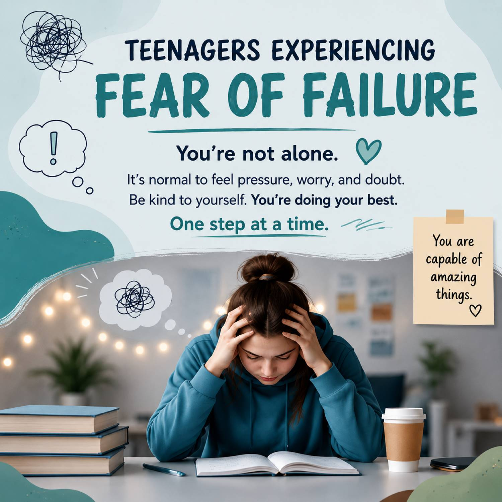
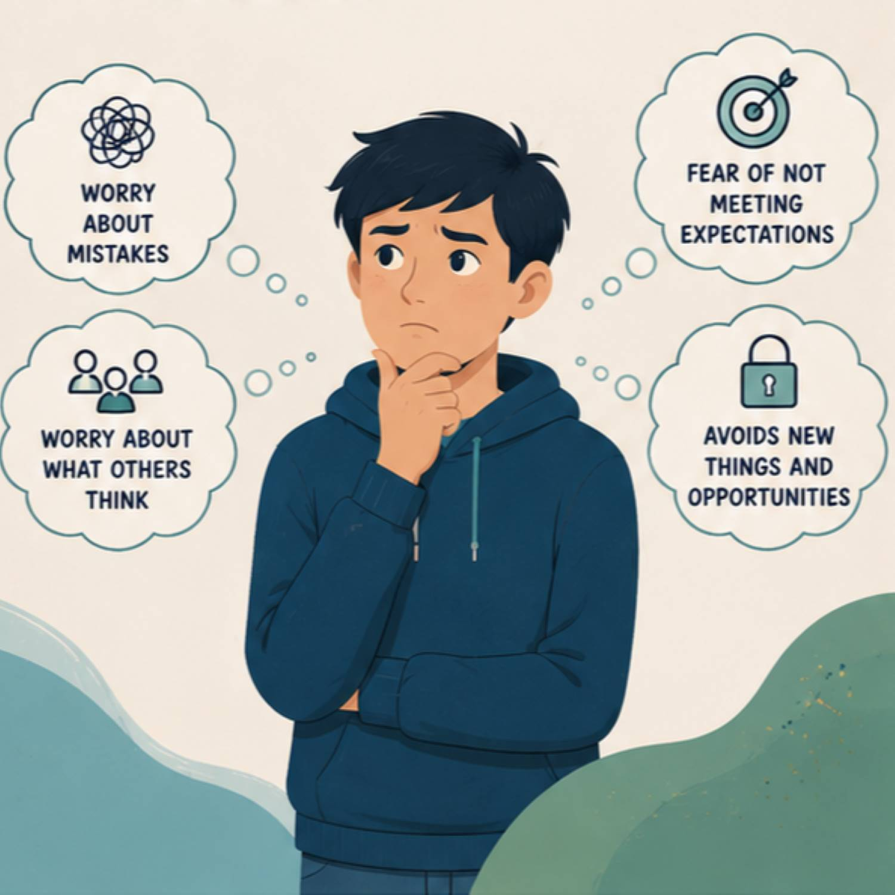

What is Fear of Failure?
Fear of failure is when you are very worried about making mistakes or not achieving your goals. People with a fear of failure often feel stressed, nervous, or anxious when they have to complete tasks where they might be judged by others. This can happen at school, in sports, with friends, or in everyday situations. Many people with this fear worry that others will think less of them if they fail, which can stop them from trying new things or taking risks.
Remember:

My Experiences
I am a 17-year-old with Polynesian heritage, I understand what it feels like to have a lot of pressure from family to succeed. Many parents and relatives have high expectations because they want the best future for us, but sometimes it can feel overwhelming. As the youngest of ten siblings, I often felt like I had to do better than the others and make my family proud. While I know their support comes from a place of love, it can sometimes feel like there is no room to choose my own path or follow what I am passionate about. This pressure can create feelings of fear, stress, guilt, and anxiety about failing at school or in other areas of life. I know what it feels like to carry expectations on your shoulders and worry about letting people down. I believe many teenagers can relate to feeling pressured to succeed while also wanting the freedom to make their own choices about their future.- Sela Alekisio

Overcoming Fear of Failure
Overcoming fear of failure takes time, but there are many ways to make it easier. Start by changing the way you think about failure and see it as an opportunity to learn rather than something to avoid.
Set realistic goals and focus on making progress instead of being perfect. Challenge negative thoughts and remind yourself that everyone makes mistakes. Try new things, even if they feel uncomfortable, as this can help build confidence over time.
Motivations
Failure does not define who you are. Every successful person has faced challenges, made mistakes, and experienced setbacks before reaching their goals. What matters most is not how many times you fail, but how many times you get back up and keep trying. Each mistake is an opportunity to learn, grow, and become stronger. Believe in yourself, trust the process, and remember that progress is more important than perfection.
Need Some Motivation?
Believe in yourself and keep going!
Can You Relate?
Fear of failure can happen in many different parts of life. Choose a situation below that you might relate to.
Click a button to see how fear of failure can affect different situations.
Your Privacy Matters
SafeSpace is a place where teenagers can learn about fear of failure and feel supported. Your privacy is important, so you should never feel pressured to share personal information or experiences.
- Do not share private details such as your full name, home address, phone number, or passwords.
- Think carefully before sharing personal experiences online.
- If you need help, talk to a trusted adult, teacher, counsellor, or someone you feel safe with.
- SafeSpace is an educational website and is not a replacement for professional mental health support.
Remember: You can learn, reflect, and grow without sharing anything you are not comfortable with.